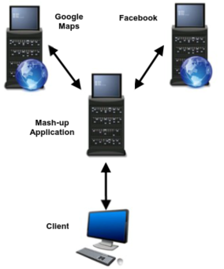

Mash-Ups Applications
Mash-Ups is a feature of Web 2.0 websites. An application can combine two or more sites into a widget or feature of its site.
Same Origin PolicySame Origin Policy (SOP) same as JavaScript, AJAX (XMLHttpRequest object) can access data only from the same origin that the original JavaScript came from:
◇ Same host
◇ Same protocol
◇ Same port
Because the Application need to retrieve informations from external sites, how Mash-Up Application can evade SOP restrictions?
With
Mash-Up Proxy Feature The mash-up application receives the requests from the client code and retrieves the site desired. When the client code from both sites is returned to the user, it appears to be coming from the mash-up application, allowing the bypass of same origin restrictions.
Mash-Up Proxy IssuesThe main issue is the control of this URL used by the proxy.
If the attacker can change the URL parameter, could be a vulnerability. This parameter is commonly part of a GET or POST request, and we can abuse it to either browse to other sites(possibly intranet applications we cannot access directly) or retrieve malicious JavaScript for an XSS attack.
Prevention: The application may use a check string to prevent this attack type